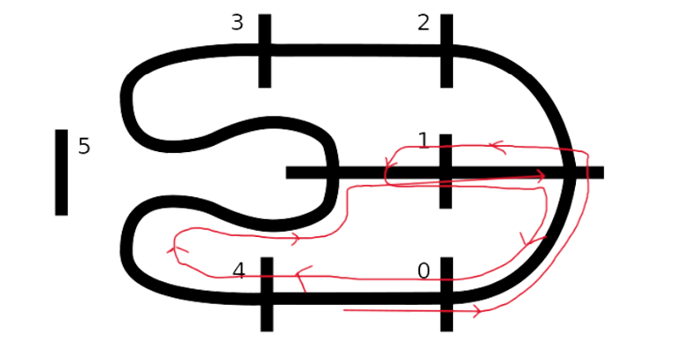
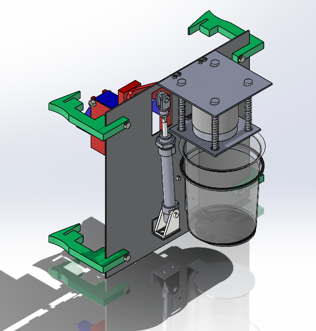
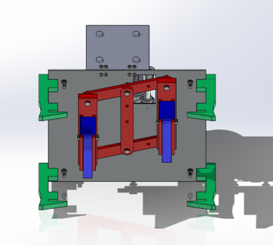
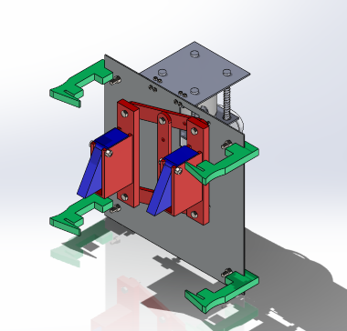

Agustín Rivero Martel
Mechatronic Engineer
Passionate about the combination of mechanical, electronic, and software systems to develop innovative engineering solutions.


About me
I'm a mechatronic engineer graduate from Dublin City University. I build things that move and think: autonomous vehicles, pneumatic climbers, embedded timers and industrial control panels. I've worked on wastewater treatment plant electrical design at Murphy International and taught engineering labs at DCU. My philosophy is simple: model it, build it, test it, then fix what the test shows. I'm most interested in robotics, control systems and low-level embedded code.
Featured engineering projects
Robot Trainer (Final Year Master's Project)
2025 – 2026 · Dublin City UniversityA UR3e teaching rig that makes robot kinematics visible to students.
Robot Trainer (Final Year Master's Project)
A UR3e teaching rig that makes robot kinematics visible to students.
- Problem / goal
- Robotics theory is hard to connect to real hardware. The goal is a demonstrator students can use to validate kinematics theory from the DCU Robotics module.
- My role and actions
- I locked four of the UR3e's six joints so only the base and elbow move, derived its forward kinematics with the Denavit-Hartenberg convention, and reduced it to two symbolic transformation matrices. I programmed a four-waypoint pick-and-place in PolyScope and designed the student lab exercise around it.
- Tech stack and methods
- Result
- The robot performs four movements in a pick-and-place sequence. Each is a unique combination of the base angle θ1 and the elbow angle θ3, the only two moving joints. The other four joints stay fixed, so the six-axis UR3e behaves like a two-axis arm. For each waypoint, the kinematic model's predicted tool position was compared with the PolyScope teach pendant. The x and y positions matched within 0.3 to 14.3 mm. The z position was off by a consistent 25.8 to 29.9 mm, most likely because the model uses nominal rather than factory-calibrated DH parameters.Difference between model and teach pendant, in mm.
Waypoint θ1 θ3 Δx Δy Δz WP1 100° 132° 0.3 1.5 29.9 WP2 100° 100° 2.5 14.3 25.8 WP3 20° 100° 14.1 4.4 25.8 WP4 20° 132° 1.4 0.6 29.6 - Media
-

Presenting at the DCU expo, May 2026 
UR3e demonstrator setup
Mobile Robotics
Automated Guided Vehicle (AGV) · Team project · Dublin City UniversityA custom-engineered chassis and multi-function AGV, built from scratch and fully operational.
Mobile Robotics
A custom-engineered chassis and multi-function AGV, built from scratch and fully operational.
- Overview
- This project highlights a custom-designed Automated Guided Vehicle (AGV) featuring a fully custom-engineered chassis and expanded multi-function operational capabilities.
- Key highlights
- Custom chassis architecture: a purpose-built chassis and cover, designed in CAD rather than taken from a kit.
- Multi-functional payload and autonomy integration: several functions combined in one vehicle.
- Enhanced mobility: steering and locomotion driven by custom embedded C.
- My role and actions
- Co-engineer. I architected, integrated and debugged the low-level embedded C that drives the steering and locomotion mechanisms.
- Tech stack and methods
- Result
- Delivered a fully working autonomous vehicle built from scratch. Add speed, accuracy or lap results here.
- 3D model
Loading 3D model...
Drag to rotate. Use the Shell button to switch between solid, x-ray and off. Lower servos sit on the same axis as the arms. Upper servos inside the head drive the grey eyebrow discs through a linkage. The front cables run from the breadboard to the green optical sensor. Parts are separate meshes, and proportions and wire routing are estimated from the photos and videos.
- Media
-

Track and route plan 
Electronics prototype 
Custom chassis cover (CAD) 
Final assembly
Fireman Robot
Dublin City UniversityA pneumatic robot that climbs a ladder while carrying a beaker of water.
Fireman Robot
A pneumatic robot that climbs a ladder while carrying a beaker of water.
- Problem / goal
- Climb a ladder and carry a full beaker of water to the top without spilling it.
- My role and actions
- Designed, built and tested the robot, from the mechanism and pneumatic circuit through to iterative testing.
- Tech stack and methods
- Result
- The robot ascended the ladder and delivered an empty beaker. In a head-to-head race against another team's robot, some water spilled when the beaker was full. Keeping the water steady at race speed is the next improvement.
- Media
-

Beaker holder and ladder hooks (SolidWorks) 
Linkage and actuators, front view (SolidWorks) 
Linkage and actuators, angled view (SolidWorks)
Embedded Systems on PIC16F690
Dublin City UniversityAutomated timers and temperature sensing, written close to the metal.
Embedded Systems on PIC16F690
Automated timers and temperature sensing, written close to the metal.
- Problem / goal
- Build small, reliable embedded devices that read sensors and run timed logic with tight resources.
- My role and actions
- Designed, built and programmed multiple systems. I wrote and debugged the firmware in C and Assembly using MPLAB.
- Tech stack and methods
- Result
- Several working timer and temperature-sensor builds running on a single microcontroller family.
- Media

Breadboard build with two-digit display
Technical skills
Programming Languages
- C and C++
- Assembly
- Java
- MATLAB and R
- PolyScope
Hardware and software tools
- SolidWorks (Certified Associate)
- Simulink
- Microchip MPLAB, PIC16F690
- PLC and automation
- UR3e collaborative robot
Methodologies
- Control systems and simulation
- Robot kinematics
- Parametric CAD and product design
- Electrical design and control panel commissioning
- Embedded debugging
Experience and education
- Sep 2025 – Jun 2026
Teaching Assistant, DCU Engineering Faculty
Ran undergraduate tutorials and laboratory seminars, giving structured technical guidance on core topics.
- Sep 2025 – Apr 2026
Teaching Assistant, Centre for Talented Youth Ireland (CTYI)
Assisted the lead instructors in the classroom, supervised students and handled day-to-day admin. When an instructor was unavailable, I stepped in at short notice and taught the specialised sessions myself so the class stayed on schedule.
- Apr 2024 – Dec 2024
Electrical Design Engineer Intern, Murphy International
Produced electrical and control design documentation for large-scale wastewater treatment plants. Led control panel commissioning and electrical testing for capital projects, and met or beat project deadlines.

Motor control centre (MCC) 
Variable speed drives (VSDs)
Education and certifications
- Aug 2026
MEng Mechatronic Engineering, Dublin City University
2:1 (Hons) across both degrees, 3.3 GPA. Robotics, control systems and simulation, electromechanical systems.
- Aug 2025
BEng Mechatronic Engineering, Dublin City University
Advanced mathematics, software engineering, engineering mechanics, CAD and product design.
- Certification
Certified SolidWorks Associate
Advanced CAD and parametric modelling.
- 2006 – 2021
General Certificate of Education, British School of Gran Canaria
A-Levels: Physics A, Spanish A*, German A, Maths B. All-Round Scholarship recipient.
Contact
I'm open to mechatronics, robotics, controls and embedded roles. I hold a Spanish citizenship and EU passport, so I can work in the EU without sponsorship.